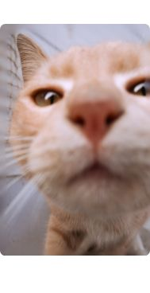

Los gatos son animales fascinantes, llenos de misterio y comportamientos únicos que a menudo nos dejan con la curiosidad de querer entenderlos mejor. Cada gato tiene su propia personalidad y maneras de comunicarse, pero con un poco de atención, podemos aprender a interpretar sus gestos, sonidos y acciones.
 En esta sección, te ofrecemos datos curiosos sobre estos enigmáticos felinos y consejos prácticos para profundizar en su mundo. Desde cómo entender su lenguaje corporal hasta cómo crear un entorno ideal para ellos, aquí encontrarás todo lo que necesitas para conocer mejor a tu gato y fortalecer vuestro vínculo. ¡Sigue leyendo y descubre lo que tu gato está tratando de decirte!
Los gatos tienen entre 50 y 80 millones de receptores olfativos, mucho más que los humanos, lo que les permite detectar olores y feromonas que son invisibles para nosotros.
Son conocidos por ser grandes dormilones, y en promedio duermen entre 12 y 16 horas. Esto les ayuda a mantener su energía para cazar (incluso si solo es un juego).
Los gatos pueden frotar su cabeza o su cuerpo contra ti para marcarte con sus feromonas. Es una forma de mostrar que confían en ti.
Las almohadillas de sus patas no solo les dan una caminata silenciosa, sino que también les sirven para medir distancias cuando cazan.
Pueden moverlas en direcciones distintas para escuchar sonidos con gran precisión. Esto les ayuda a detectar presas incluso en ambientes ruidosos.
Tips para Conocer Mejor a tu Gato
Los gatos son muy expresivos con su cuerpo. Si su cola está erguida, suele significar que está contento y confiado. Si la cola está inflada, puede estar asustado o sorprendido. Las orejas hacia atrás indican que está incómodo o molesto.
No todos los gatos son iguales. Algunos prefieren estar solos, mientras que otros disfrutan de la compañía. Observa su comportamiento para identificar sus preferencias y necesidades.
Los gatos aman tener su espacio privado donde puedan descansar tranquilos. Si tu gato busca esconderse en un rincón, asegúrate de respetar ese lugar para que se sienta cómodo.
Los gatos son cazadores por naturaleza. Proporcionar juguetes interactivos, como cañas de pescar o juguetes que imiten el movimiento de las presas, les permitirá mantenerse activos y estimulados mentalmente.
Si bien algunos gatos disfrutan de los mimos, otros prefieren que se les acerque de manera más sutil. Si un gato empieza a alejarse o muestra signos de incomodidad (como mover la cola rápidamente), es una señal de que necesita su espacio.
Los gatos son animales que suelen necesitar tiempo para adaptarse a cambios. Si has hecho una mudanza, o si tienes un nuevo miembro en la familia (como otro gato o un perro), dale tiempo y paciencia para que se acostumbre a su nuevo entorno.
¿Sabías Que...?
Aunque comúnmente se asocian los bigotes con la cara del gato, los gatos también tienen "bigotes" en sus patas y otras partes de su cuerpo. Estos les ayudan a medir el espacio y detectar obstáculos.
Esto es porque sus patas traseras son muy poderosas, permitiéndoles saltar grandes distancias y alcanzar lugares altos.
Este comportamiento de "amasar" con sus patas delanteras se remonta a su etapa de gatito, cuando lo hacían para estimular la producción de leche de su madre.